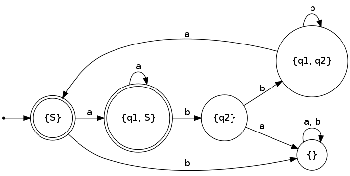

Der nicht-deterministische endliche Automat zu dem regulärem Ausdruck \((a \cup (ab(b)^\text{*}ba))^\text{*}\) ist folgender: \(Q = \{S, q_1, q_2\}\) \(\Sigma = \{a, b\}\) \(\delta = \text{siehe Grafik}\) \(F = \{S\}\) \(NEA = \left( Q, \Sigma, \delta, S, F \right)\)

Will man daraus nun den endlichen Automaten konstruieren, läuft das im Prinzip über eine Potenzmengenkonstruktion.
Zuerst definieren wir: \(\tilde{S} = E(S) = \{S\}\)
Dann erstellen wir folgende Tabelle:
| $\tilde{S}$ | {S} |
|---|---|
| a | |
| b |
Dann überprüft man, welche Zustände erreicht werden können, wenn man vom jedem Zustand in der Startmenge (hier also nur S) a einliest. Das ist in diesem Fall q1 oder S. Also haben wir eine weitere Zustandsmenge {q1, S}. Diese wird als neue Spalte in unsere Tabelle geschrieben:
| $\tilde{S}$ | {S} | {q1, S} |
|---|---|---|
| a | {q1, S} | |
| b |
Nun geht man also jede Spalte, von links nach rechts durch. Für jede Spalte wird jede Zeile, von oben nach unten, überprüft. Mit jeder Überprüfung kann eine neue Zustandsmenge als Spalte hinzukommen. Die Anzahl der Zeilen ist eine Kopfzeile + die Anzahl der Zeichen im Eingabealphabet.
Am Ende schaut die Tabelle wie folgt aus:
| $\tilde{S}$ | {S} | {q1, S} | $\emptyset$ | {q2} | {q1, q2} |
|---|---|---|---|---|---|
| a | {q1, S} | {q1, S} | $\emptyset$ | $\emptyset$ | {S} |
| b | $\emptyset$ | {q2} | $\emptyset$ | {q1, q2} | {q1, q2} |
\(\tilde{Q} = \{\{S\}, \{q_1, S\}, \{q_2\}, \{q_1, q_2\}\}\) \(\tilde{F} = \{\{S\}, \{q_1, S\}\}\)
Die Übergangsfunktion wurde mit dieser Tabelle schon hinreichend dargestellt. Nun folgt eine Darstellung der deterministischen Variante des nichtdeterministischen Automaten:
{kind=link}

Material
Die .gv sieht so aus:
digraph finite_state_machine {
rankdir=LR;
size="8,5"
node [shape = doublecircle, label="{S}"] S;
node [shape = doublecircle, label="{q1, S}"] q1S;
node [shape = circle, label="{q2}"] q2;
node [shape = circle, label="{q1, q2}"] q1q2;
node [shape = circle, label="{}"] T;
node [shape = point ]; qi
qi -> S;
S -> q1S [ label = "a" ];
S -> T [ label = "b" ];
q1S -> q1S [ label = "a"];
q1S -> q2 [ label = "b"];
q2 -> T [ label = "a"];
q2 -> q1q2 [ label = "b"];
q1q2 -> S [ label = "a"];
q1q2 -> q1q2 [ label = "b"];
T -> T [label = "a, b"];
}
Unter Linux kann man mit GraphViz mit folgendem Befehl die Datei erstellen:
dot -Tpng graph.gv -o deterministic-fsm.png